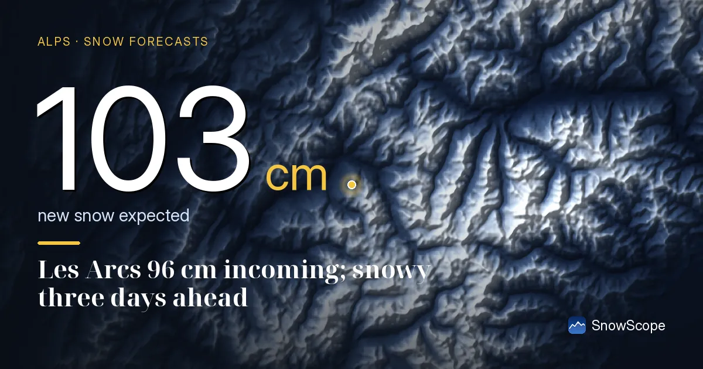

Les Arcs 96 cm incoming; snowy three days ahead
Les Arcs sits at 46 cm on the upper slopes and is about to transform. Our model, run on November 16, shows 96 cm of new snow arriving over the next three days, with today (November 17) bringing the heaviest snow—around 39 cm—as a significant storm wave moves through the French Alps.
See the live snow forecast for Les Arcs in the SnowScope appSnow depth, powder alerts and the 3D map, free.
Today's decisive snow
The timing is sharp in our model: Les Arcs will receive 39 cm today, 22 cm tomorrow, and 35 cm on November 19. All three days bring fresh snow, but today is the main event. The upper slopes currently hold just 46 cm, so today's accumulation alone will add 85 percent more than what's on the ground. The conditions are favorable: the freezing level at Les Arcs reaches 3,020 m at its peak today, meaning virtually all precipitation at the upper elevations will fall as snow, not rain. This is crucial for cementing a stable base above 3,000 m.
| Resort | Snow depth | New snow, 72 h | Coming, next days | Top |
|---|---|---|---|---|
| Orelle | 85 cm | 35 cm | 103 cm | 3,221 m |
| Les Grands Montets | 45 cm | 31 cm | 100 cm | 2,768 m |
| Courmayeur | 34 cm | 29 cm | 100 cm | 2,749 m |
| La Grave | 96 cm | 46 cm | 98 cm | 3,543 m |
| Les Arcs | 46 cm | 29 cm | 96 cm | 3,205 m |

The broader Alpine picture
Les Arcs is part of a wider snowfall event affecting major resorts across the range. Orelle leads the pack with 103 cm forecast over the next three days, while Les Grands Montets, Courmayeur, and La Grave are all receiving 98–100 cm. The pattern is synchronized: each resort sees its heaviest snow today (November 17), with smaller deposits on the following two days. Currently, 912 of the Alpine resorts tracked in our network show some snow cover out of 1,204 total resorts in the region. By November 19, however, that number is expected to drop to 819 as lower elevations warm and experience melt or rain. This early-season snow is therefore vulnerable to consolidation if the weather turns milder or sunnier after the storm passes.
Height and freezing-level dynamics
The elevation story is critical at this stage of the season. Upper slopes and high peaks will capture the deepest new snow; lower elevations, by contrast, face a mixed precipitation risk. Across the high resorts, upper-slope zones are accumulating 115–124 cm over a week-long window (at Orelle and Les Grands Montets respectively), while base elevations barely exceed 10–12 cm. At Les Arcs specifically, the freezing level on November 18 drops to 2,780 m at its peak, meaning slopes below that threshold could see sleet or rain alongside or instead of snow. By November 19 the freezing level falls to 2,550 m, stabilizing the precipitation pattern—but only after the transition zone has already affected mid-elevation terrain. Focus on terrain above the freezing level, where snow will dominate through the whole storm.
Early-season context and comparisons
Putting this snow in perspective: Les Arcs currently averages 20 cm at mid-elevation (2,214 m), which is below the November 17 normal of 27 cm for this date and location. That said, it is deeper than a week ago (6 cm on November 10), reflecting the recent accumulation cycles. This storm will push the mid and upper zones well above normal for mid-November. Satellite imagery from November 14 showed continuous snow cover across Les Arcs, so the foundation is real rather than patchy—new snow is adding to existing stability rather than clinging to bare rock. For early-season skiers, the ski-able area will expand significantly after these three days.
Tips for skiers
- November 17 is the snowiest day—expect the best powder conditions later today and overnight at the highest elevations.
- On November 17, the freezing level peaks at 3,020 m at Les Arcs, so nearly all precipitation falls as snow; prioritize high terrain.
- November 18 brings a critical shift: the freezing level drops to 2,780 m, meaning slopes below that threshold will see sleet. Focus grooming and skiing efforts on upper elevations.
- Expect wind effect on exposed ridges: even if our model's 96 cm arrives, wind redistribution will create scoured zones and loaded gullies.
- After November 19, watch for rapid consolidation; early-season snow bonds and settles quickly once precipitation ends.
About these numbers
Resort snow depths are the deepest snow on the resort's upper slopes from the SnowScope snow model (about 1 km, run of 16 November); they are estimates for an area, not a measurement at one point. Station values are measurements on the date shown. Forecasts can change. Always read the official avalanche bulletin before going off-piste.
Official avalanche bulletins: Météo-France BERA
Cite this report
For research, teaching or the press: the numbers and charts are free to reuse under CC BY 4.0 with this citation.
SnowScope (2026), Les Arcs 96 cm incoming; snowy three days ahead, https://snowscope.app/blog/en/2026/11/alps-les-arcs-snow-forecast-16-november-2026.html, accessed 2026-11-16
SnowScope (Atlas Labs). (2026, November 16). Les Arcs 96 cm incoming; snowy three days ahead. SnowScope snow reports. https://snowscope.app/blog/en/2026/11/alps-les-arcs-snow-forecast-16-november-2026.html
BibTeX
@misc{snowscope2026alpslesarcssnowforecast1,
author = {{SnowScope (Atlas Labs)}},
title = {Les Arcs 96 cm incoming; snowy three days ahead},
year = {2026},
month = nov,
howpublished = {\url{https://snowscope.app/blog/en/2026/11/alps-les-arcs-snow-forecast-16-november-2026.html}},
note = {Published 2026-11-17 06:57 UTC; accessed 2026-11-16}
}· CC BY 4.0 · Methods, data and tools →
Les Arcs: snow and temperature by height, this winter vs last (tools) →
Follow Les Arcs
Free: a message when fresh snow is coming, and the forecast every morning.
More snow reports

Snow depth in Chamonix on 13 November 2026, height by height: nothing on the valley floor, 1 cm at 2001 m, 12 cm at the top of Brévent-Flégère (2486 m), 5 to 24 cm at the top of the Grands Montets (2768 m). About a metre forecast up high this week, rain in the valley. How deep Chamonix usually gets, from 46 winters.

In 24 of 46 winters, resorts on the Italian and southern French side of the Alps had a relatively bigger winter than the northern side. The chart, the big years and the weather behind them.

What is true about La Grave, the off-piste mountain under La Meije: terrain, safety, snow by month and the trend, from 46 past winters.